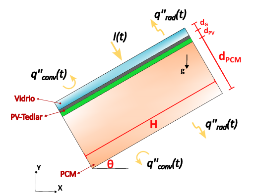
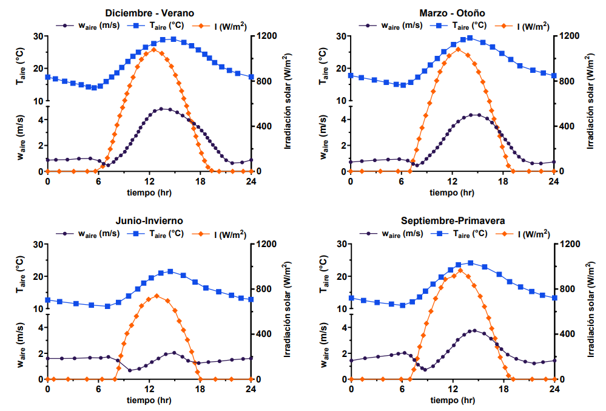
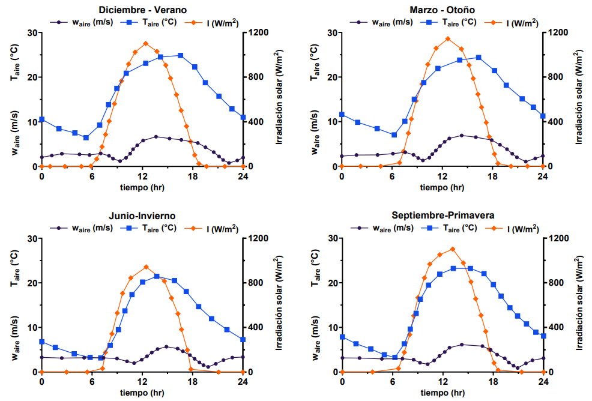

Overview
This page documents a FreeFEM-based finite element model developed to study the thermal behaviour and electrical-generation response of a photovoltaic panel coupled with a passive phase change material cooling layer.
The documented case goes beyond a purely conductive PCM model by incorporating conjugate heat transfer, natural convection in the melted PCM, transient heat generation in the photovoltaic layer, and time-dependent atmospheric conditions during a full day-night cycle.
The objective is not only to show simulation results, but also to expose the structure of the model: physical assumptions, governing equations, numerical methodology, validation strategy, and engineering interpretation.
Engineering Context
Photovoltaic systems lose electrical efficiency as cell temperature increases. In warm and highly irradiated climates, the thermal behaviour of the panel becomes a limiting factor for electrical performance, especially during peak daytime operation.
Passive cooling with phase change materials (PCM) is attractive because it does not require pumps or additional power consumption. The PCM absorbs part of the heat rejected by the panel through latent heat storage, reducing the temperature peak and delaying thermal saturation.
From an engineering perspective, this type of model is useful for comparing PCM types, evaluating PCM thickness, estimating the gain in energy generation, and quantifying the value of including natural convection and adaptive meshing in the numerical treatment.
Problem Definition
The purpose of the model is to characterize the thermal and energetic performance of a PV-PCM system subjected to realistic transient outdoor conditions.
In particular, the analysis focuses on:
- Temperature evolution in the photovoltaic panel and the PCM domain
- Solid-liquid phase change inside the PCM
- Natural convection in the molten PCM
- Effect of PCM material selection
- Effect of PCM thickness
- Electrical energy generation under transient thermal conditions
- Influence of dynamic adaptive meshing on computational cost and resolution
The case was analyzed for two Chilean climatic zones, Vicuña and Calama, and across the four seasons of the year using hourly variable atmospheric conditions.
Physical System
The modeled configuration consists of a photovoltaic (PV) panel coupled with a rear phase change material (PCM) layer, which acts as a passive thermal management system. The system is composed of multiple domains with distinct thermal roles, including the glass cover, the PV-Tedlar layer, and the PCM enclosure.
Under solar irradiation, the photovoltaic layer converts part of the incident energy into electricity, while the remaining fraction is dissipated as heat. This heat is conducted toward the rear PCM region, where it is initially stored as sensible heat and subsequently as latent heat during the phase transition process.
As the PCM melts, buoyancy-driven flow develops within the liquid phase due to density variations, leading to natural convection. This introduces a strong coupling between heat transfer, fluid flow, and phase change, making the problem inherently transient and conjugate.

As shown in , the PV-PCM configuration captures the interaction between external atmospheric forcing and internal thermal dynamics, including conduction across layers, latent heat storage, and convection-driven heat redistribution within the melted PCM.
Engineering note: Unlike simplified conductive PCM models, this formulation explicitly resolves the coupling between melting, buoyancy-driven flow, and transient environmental conditions, which is essential for accurately predicting thermal performance and its impact on electrical energy generation.
Mathematical Model
The PV-PCM system is modeled as a transient multi-domain problem involving coupled heat transfer and fluid flow. In the PCM cavity, the formulation combines mass conservation, momentum transport, and a temperature-based energy equation to describe melting and buoyancy-driven convection. In the solid layers, heat transfer is governed by transient conduction with volumetric heat generation where appropriate.
The phase-change process is incorporated through a temperature-based latent heat representation, while the suppression of velocity in solid and mushy regions is introduced through a Carman–Kozeny penalization term. Buoyancy effects are modeled using the Boussinesq approximation. The governing equations are defined in the PCM and solid domains as – .
PCM domain
In the PCM region, the governing equations correspond to the conservation of mass, momentum, and energy, given by – .
This system describes an incompressible, buoyancy-driven flow with phase change. The velocity field is governed by the balance between inertial, viscous, and buoyancy forces, while the penalization term \(A(T)\) suppresses motion in solid and partially solidified regions. The energy equation accounts for both sensible and latent heat contributions through the function \(s(T)\), enabling the capture of melting and solidification without explicitly tracking the phase interface.
In these equations, \(\mathbf{u}\) is the velocity field, \(p\) the pressure, \(\rho\) the density, \(c_p\) the specific heat capacity, \(k\) the thermal conductivity, and \(\nu\) the kinematic viscosity. The parameter \(\beta\) denotes the thermal expansion coefficient, \(\mathbf{g}\) the gravitational acceleration vector, and \(T_{ref}\) a reference temperature. The function \(A(T)\) represents the momentum penalization term, while \(s(T)\) accounts for the latent heat contribution.
Solid domain
In the solid layers, heat transfer is described by a transient conduction equation with a volumetric heat-generation term, as given by .
In this region, heat transfer occurs purely by conduction, since no fluid motion is present. The term \(S_{gen}\) represents the volumetric heat generation within the solid layers, accounting for effects such as solar absorption in the PV cells. The thermal properties are assumed to be constant, and the temperature field is coupled with the PCM domain through interfacial heat flux continuity.
Boussinesq approximation
Buoyancy effects are modeled using the Boussinesq approximation, in which density variations are assumed to be small and are only retained in the gravitational term. Under this assumption, the density is linearized as a function of temperature according to .
This approximation leads to a buoyancy force of the form \(\beta \mathbf{g}(T - T_{ref})\), which appears in the momentum equation . It allows the flow to be treated as incompressible while still capturing natural convection driven by temperature differences.
Carman–Kozeny penalization
The penalization term appearing in the momentum equation is computed from the Carman–Kozeny model , where the local liquid fraction is defined by . This approach is consistent with the enthalpy–porosity method, in which the mushy region is modeled as a porous medium through a Carman–Kozeny-type penalization, as described by Belhamadia et al. (2012).
Here, \(A(T)\) is the momentum penalization coefficient, \(L_{f}(T)\) is the local liquid fraction, and \(C_{CK}\) is the Carman–Kozeny constant controlling the intensity of the velocity damping, which depends on the specific PCM considered. The parameter \(b\) is a small positive regularization constant introduced to avoid division by zero when the liquid fraction tends to zero.
In the liquid region, where \(L_{f}(T)=1\), the penalization term vanishes and the PCM can flow freely. In the solid region, where \(L_{f}(T)=0\), the penalization becomes dominant and suppresses the velocity. Within the phase-change interval, the liquid fraction varies smoothly with temperature, producing the progressive damping associated with the mushy zone.
In , \(T_f\) denotes the fusion temperature of the PCM, while \(T_{\varepsilon}\) defines the half-width of the temperature interval used to regularize the phase change around \(T_f\). Thus, the interval \(T_f - T_{\varepsilon} \leq T \leq T_f + T_{\varepsilon}\) represents the mushy region. The function \(F_{L_{f}}(T)\) is the smooth interpolation adopted in that interval to ensure a continuous transition between the solid and liquid states.
Latent heat representation
The phase-change process is incorporated through a temperature-based latent heat representation. For pure materials, the latent contribution is introduced via an additional function \(s(T)\), which accounts for the enthalpy variation associated with melting and solidification. This approach is consistent with classical enthalpy-based formulations for phase-change problems, as described by Voller et al. (1987). Its general form in the mushy region is given by .
Here, \(s(T)\) represents the latent contribution expressed in temperature units, where \(h_{sl}\) is the latent heat of fusion and \(c_p\) is the specific heat capacity. The constants \(s_s\) and \(s_l\) correspond to the solid and liquid states, respectively.
Outside the phase-change interval, \(s(T)\) is constant, indicating that no latent heat is absorbed or released. Within the interval \(T_f - T_{\varepsilon} \leq T \leq T_f + T_{\varepsilon}\), the function \(F_s(T)\) provides a smooth transition between the solid and liquid states, ensuring numerical stability and consistency with the liquid fraction formulation.
For pure materials, this formulation also leads to a simplification of the convective term in the energy equation. Since the latent contribution depends only on temperature, it can be incorporated as a local transient term, avoiding the need to explicitly advect the latent enthalpy. As a result, the phase-change process is captured through the temporal evolution of \(s(T)\), while convection acts only on the sensible heat contribution.
Regularization in the mushy zone
Discontinuous step-like functions arising in the phase-change formulation are regularized using a smooth hyperbolic-tangent expression. This approach follows the formulation proposed by Danaila et al. (2014), which ensures numerical stability and enables the use of Newton-based solvers in phase-change problems with natural convection. The regularization is written as .
Here, \(F(T)\) represents a smooth approximation of a discontinuous phase-indicator function, transitioning between the solid value \(f_s\) and the liquid value \(f_l\). The parameter \(T_s\) defines the center of the transition, while \(R_s\) controls the width of the regularization interval. The parameter \(a_s\) governs the steepness of the transition, allowing the function to approximate a sharp interface while remaining differentiable.
This regularization is consistently applied to the liquid fraction and latent heat functions, replacing discontinuous definitions with smooth counterparts. As a result, the governing equations become fully differentiable, which is essential for the convergence of Newton-type iterative methods and improves the robustness of the numerical solution.
Initial and Boundary Conditions
The PV-PCM system is initialized under thermal equilibrium with the ambient environment. At the beginning of the simulation, the panel and PCM are assigned the initial atmospheric temperature, and the PCM may be entirely solid depending on the selected season and material.
Initial condition
External boundary conditions
The external surfaces exchange heat with the environment through transient convection and radiation. The atmospheric forcing changes during the 24-hour cycle, so the thermal boundary conditions are explicitly time-dependent.
Side or symmetry boundaries can be simplified depending on the selected two-dimensional representation, while the coupling between internal layers is treated through continuity of temperature and heat flux.
Flow boundary condition inside the PCM
No-slip conditions are imposed at the solid walls of the PCM enclosure:
Time-Dependent Atmospheric Conditions
A key feature of this case is the use of realistic atmospheric boundary conditions that vary over the day–night cycle. Instead of prescribing constant values, the model incorporates time-dependent solar irradiance \(G(t)\), ambient temperature \(T_{\infty}(t)\), and wind speed \(U_{\infty}(t)\), which directly influence the thermal response of the PV-PCM system.
These hourly profiles are defined for the cities of Vicuña and Calama, and for the four seasons (summer, autumn, winter, and spring). This allows the model to capture the strong dependence of PCM performance on climatic conditions, seasonal variability, and the temporal history of solar loading.


These external conditions are incorporated through boundary conditions that evolve in time, affecting both convective heat transfer and radiative loading at the system boundaries. In particular, the ambient temperature and wind speed determine the effective heat transfer coefficient, while solar irradiance acts as a time-dependent heat source.
Engineering relevance: this approach provides a more realistic representation of operating conditions compared to constant or idealized inputs, as the thermal response of the PCM depends on the cumulative energy exchange and not only on instantaneous peak values.
Thermophysical Properties
The model incorporates the thermophysical properties of both the photovoltaic multilayer system and the selected phase change materials. Multiple PCM candidates were evaluated in order to assess their influence on the thermal response of the panel and the resulting electrical performance.
The selection of PCM is a key design variable, as properties such as thermal conductivity \(k\), latent heat of fusion \(h_{sl}\), specific heat capacity \(c_p\), and melting temperature \(T_f\) directly determine the material’s ability to absorb, store, and release thermal energy during transient operating conditions. The thermophysical properties used in the model are summarized in .
| Property | Units | Glass | Tedlar | RT-21 | RT-25 | RT-35 | n-Oct. | CaCl₂·6H₂O | CA | CL |
|---|---|---|---|---|---|---|---|---|---|---|
| Density (liquid) | kg/m³ | – | – | 770 | 749 | 760 | 770 | 1560 | 790 | 770 |
| Density (solid) | kg/m³ | 3000 | 1200 | 880 | 785 | 880 | 865 | 1710 | 870 | 890 |
| Specific heat (liquid) | kJ/kg·K | – | – | 2.0 | 2.4 | 2.4 | 2.196 | 2.1 | 2.3 | 2.24 |
| Specific heat (solid) | kJ/kg·K | 0.5 | 1.25 | 2.0 | 1.8 | 2.046 | 1.934 | 1.4 | 2.0 | 1.97 |
| Thermal conductivity (liquid) | W/m·K | – | – | 0.20 | 0.18 | 0.20 | 0.148 | 0.56 | 0.14 | 0.139 |
| Thermal conductivity (solid) | W/m·K | 1.8 | 0.2 | 0.20 | 0.19 | 0.20 | 0.358 | 1.08 | 0.14 | 0.143 |
| Latent heat \(h_{sl}\) | kJ/kg | – | – | 155 | 232 | 157 | 243.5 | 191 | 173 | 168 |
| Dynamic viscosity \(\mu\) | kg/m·s | – | – | 3.61×10⁻³ | 1.79×10⁻³ | 2.51×10⁻³ | 8×10⁻³ | 2.87×10⁻³ | 1.82×10⁻³ | 4.33×10⁻³ |
| Thermal expansion \(\beta\) | 1/K | – | – | 1×10⁻³ | 1×10⁻³ | 1×10⁻³ | 9.1×10⁻⁴ | 5×10⁻⁴ | 7.8×10⁻⁴ | 6.7×10⁻⁴ |
| Melting temperature \(T_f\) | °C | – | – | 21 | 26.6 | 35 | 28 | 29.8 | 22.5 | 18.5 |
In the present model, thermophysical properties are assumed constant within each phase, with discontinuities handled through the latent heat formulation introduced in the energy equation. Density variations are only considered in the buoyancy term via the Boussinesq approximation, ensuring consistency with the incompressible flow assumption.
Engineering relevance: the combined effect of latent heat capacity and melting temperature determines whether the PCM can effectively limit peak temperatures and improve overall system performance under realistic operating conditions.
Finite Element Method
The model is solved using the finite element method in FreeFEM++, following a Galerkin formulation of the coupled thermal-fluid problem. The numerical treatment uses Taylor-Hood elements for the flow variables and a higher-order treatment for the transient evolution of the temperature field.
In the thesis, the temporal discretization was based on a BDF2 scheme, the nonlinear system was solved using Newton's method, and the resulting linear systems were handled with GMRES.
- Galerkin finite element formulation
- Taylor-Hood interpolation for fluid flow
- BDF2 time discretization
- Newton linearization for the nonlinear coupled system
- GMRES iterative linear solver
- Dynamic adaptive meshing for efficiency and interface resolution
Numerical Implementation
From an implementation standpoint, the model combines solid heat conduction in the PV layers with phase change and buoyancy-driven flow inside the PCM cavity. This requires updating the liquid fraction, velocity field, temperature field, and adaptive mesh configuration as the solution evolves in time.
The dynamic adaptive mesh is especially important because the regions of strong gradients move during the simulation: around the solid-liquid interface, near thermal boundary layers, and in the zones where natural convection strengthens.
- Multi-domain treatment for PV layers and PCM region
- Transient update of atmospheric forcing and internal heat source
- Liquid-fraction-dependent momentum damping in the mushy region
- Adaptive remeshing driven by evolving solution gradients
- Post-processing of panel maximum temperature and generated electrical energy
Implementation direction in FreeFEM: for documentation purposes, the model can later be separated into geometry definition, property assignment, atmospheric-input functions, coupled variational formulation, adaptive remeshing, and post-processing modules.
Validation and Consistency
The validation strategy is staged, which is important because the full PV-PCM model includes multiple sources of complexity: phase change, multiple domains, variable boundary conditions, and internal heat generation.
1) Enthalpy-model validation
The enthalpy treatment for phase change is first validated using the one-dimensional Stefan problem, comparing the numerical solution against the analytical solution for interface position and temperature evolution.
2) Simplified PV-PCM validation
A simplified conduction-based PV-PCM configuration is then compared against previously published experimental and numerical studies, neglecting natural convection in the melted PCM.
3) Full-model validation
Finally, the complete PV-PCM model with natural convection is validated against reference results reported in the literature for transient temperature evolution.


Why this validation path is strong: it separates confidence in the phase-change treatment from confidence in the full conjugate PV-PCM system.
Results and Discussion
The chapter evaluates three central engineering questions: which PCM performs better, how PCM thickness affects thermal control and energy generation, and what is gained by using natural convection and dynamic adaptive meshing in the numerical model.
Influence of PCM type
Seven phase change materials were compared under transient climatic conditions. The results show that PCM choice strongly affects both the maximum temperature reached by the photovoltaic cell and the total electrical energy produced over the cycle.
Influence of PCM thickness
Increasing PCM thickness generally improves thermal buffering, but it also changes the internal convective dynamics and the duration over which the material can remain effective. The thesis presents this effect for multiple seasons in both Vicuña and Calama.


Electrical-energy gain
A central result of the study is that improved thermal control translates into a measurable increase in electrical energy production. In the reported simulations, the maximum gain reached 2.6%, and one of the most favorable cases achieved a maximum temperature reduction of up to 4.84 °C.

Adaptive mesh and natural convection
The thesis also shows that including natural convection produces a more complete and realistic representation of the PV-PCM system than models based only on enhanced conduction. At the same time, dynamic adaptive meshing makes this richer model computationally feasible by concentrating resolution where it is most needed.


Main takeaways: the PV-PCM approach reduces peak temperature, increases electrical generation, and benefits substantially from a formulation that resolves phase change and buoyancy-driven transport with adaptive meshing.
Code Structure
A practical FreeFEM implementation for this case can be organized into the following blocks:
// 1. Geometry and mesh
// - PV multilayer domain
// - PCM cavity
// - boundary labels
// 2. Material properties
// - solid-layer properties
// - PCM properties
// - phase-change interval
// - buoyancy parameters
// 3. Atmospheric input functions
// - solar irradiance G(t)
// - ambient temperature Tamb(t)
// - wind velocity Vwind(t)
// - convection coefficient h(t)
// 4. Variational formulation
// - continuity
// - momentum with Boussinesq + porosity damping
// - energy with source term in PV layer
// - liquid fraction / enthalpy update
// 5. Time loop
// - update atmospheric boundary conditions
// - solve nonlinear coupled system
// - adapt mesh if required
// - compute Tmax and energy generation
// 6. Post-processing
// - thermal fields
// - velocity fields
// - liquid fraction
// - maximum PV temperature
// - electrical energy output
This section is intentionally schematic for now. In the next refinement, it can be replaced by the actual structure of your thesis code and linked to the corresponding FreeFEM source files.
Conclusions
This case documents a substantially richer PV-cooling model than a standard conduction-only thermal study. The formulation combines phase change, natural convection, transient environmental forcing, internal heat generation, and adaptive meshing into a single engineering framework.
The results support the use of PCM as an effective passive thermal-management strategy for photovoltaic systems, especially when the melting range is well matched to panel operating temperatures. The study also shows that realistic transient boundary conditions matter, because the benefit of PCM depends on climate, season, and thermal history over the full day-night cycle.
From a computational standpoint, dynamic adaptive meshing is one of the key enablers of this work, allowing the model to retain physical richness while sharply reducing CPU cost relative to fixed-mesh calculations.
References
The main reference for this case is the following thesis chapter and the literature sources used there for validation and contextual comparison.
- Allendes Molina, T. P. (2025). Predicción de almacenamiento de energía solar con materiales de cambio de fase mediante el método de elementos finitos y mallas adaptativas. Magíster en Mecánica Computacional, Universidad de La Serena.
- Brano, V. L., et al. (2014). Experimental and numerical analysis of a PV-PCM system under transient climatic conditions.
- Huang, M. J., et al. (2011). Numerical modelling of photovoltaic modules integrated with phase change materials.
- Skoplaki, E., & Palyvos, J. A. (2009). On the temperature dependence of photovoltaic module electrical performance.
- Belhamadia, Y., Kane, A.S. and Fortin, A. (2012). An enhanced mathematical model for phase change problems with natural convection. International Journal of Numerical Analysis and Modeling.
- Voller, V.R., Cross, M. and Markatos, N.C. (1987). An enthalpy method for convection/diffusion phase change. International Journal for Numerical Methods in Engineering.
- Danaila, I., Moglan, R., Hecht, F. and Le Masson, S. (2014). A Newton method with adaptive finite elements for solving phase-change problems with natural convection. Journal of Computational Physics.